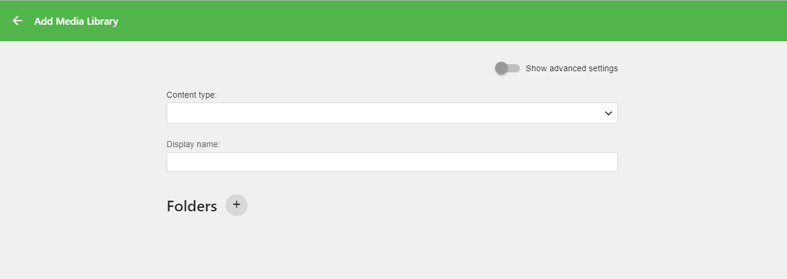
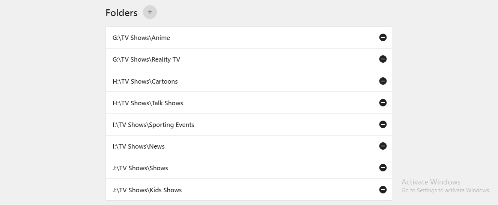

Ordnerbasierte Zugriffskontrolle
Emby 4.0 beinhaltet eine neue, äußerst leistungsfähige Methode für zusammengeführte Bibliotheken. Wenn Sie in einer vorherigen Version von Emby zusammengeführte Bibliotheken verwendet haben, sollten Sie Ihre Einrichtung überarbeiten, um von dieser neuen serverbasierten Methode zu profitieren. Die vorherige Methode war eine Benutzereinstellung zur Kombination verschiedener Bibliotheken mit bevorzugten Inhalten. Mit der Version 4.0 wird dies nun alles über die Zugriffskontrolle der Bibliothek verwaltet, was die Verwaltung erheblich vereinfacht.
Um eine Vorstellung davon zu bekommen, was zusammengeführte Bibliotheken sind und wie man sie effektiv nutzt, nehmen wir ein Beispiel, bei dem Sie mehrere Arten von Fernsehsendungsinhalten haben, die auf der Festplatte nach Kategorien aufgeteilt und gespeichert sind. Unten finden Sie die Kategorie der Fernsehsendung und den physischen Speicherort des übergeordneten Verzeichnisses jeder Kategorie.
- Anime – G:\TV Shows\Anime
- Reality-TV – G:\TV Shows\Reality TV
- Cartoons – H:\TV Shows\Cartoons
- Talkshows - H:\TV Shows\Talk Shows
- Sportveranstaltungen – I:\TV Shows\Sporting Events
- Nachrichten – I:\TV Shows\News
- Kindersendungen – J:\TV Shows\Kids Shows
- Shows – J:\TV Shows\Shows
Einrichtung der Bibliothek
Was wir tun werden, ist, EINE Bibliothek namens „TV Shows“ zu erstellen, die diese 7 Ordner enthält. Wir machen das auf herkömmliche Weise, indem wir BIBLIOTHEK im Administrations-Webpanel auswählen. Dann sollten wir Folgendes vorfinden:
Wählen Sie "Medienbibliothek hinzufügen", um zu diesem Punkt zu gelangen:

Wir wählen nun den Inhaltstyp aus dem Dropdown-Menü „TV Shows“ und verwenden auch den standardmäßigen Bibliotheksnamen „TV Shows“. Sie können diesen Namen beliebig ändern.

Nun müssen wir nur noch die oben gezeigten übergeordneten Ordner-Mountpunkte für dieses Beispiel hinzufügen, um eine funktionierende „TV Show“-Bibliothek zu haben. Wir tun dies, indem wir auf das + (Pluszeichen) neben dem Wort „Ordner“ oben klicken. Sobald wir jeden dieser übergeordneten Ordner hinzugefügt haben, sieht dieser Abschnitt so aus:

Alles, was noch zu tun bleibt, ist, auf die Schaltfläche OK zu klicken, um die Bibliothek zu erstellen (klicken Sie darauf). HINWEIS: Sie können andere Bibliotheksoptionen einschließlich erweiterter Optionen konfigurieren, diese sind jedoch nicht Bestandteil dieses Beispiels.
Berechtigungen konfigurieren
Nachdem wir jetzt unsere neue TV Shows-Bibliothek eingerichtet haben, ist es an der Zeit, die Zugriffsberechtigung für diese Bibliothek zu konfigurieren. Hier zeigt sich die Stärke von zusammengeführten Bibliotheken. Wir werden Zugriffsberechtigungen für unseren fiktiven Benutzer „JohnDoe“ einrichten und dann die Berechtigungen für „JaneDoe“ und „ChildDoe“ zeigen. Dies wird verdeutlichen, wie einfach es ist, eine Hauptbibliothek für Fernsehsendungen zu haben, aber verschiedenen Benutzern unterschiedliche Zugriffe auf unterschiedliche Teile zu gewähren, abhängig davon, an welchen Inhalten sie interessiert sind oder welche Inhalte Sie als Administrator ihnen zur Verfügung stellen möchten.
Wählen Sie im Administrations-Webpanel das Menü BENUTZER auf der linken Seite. Sie sehen dann eine Liste von Benutzern, die bereits im System eingerichtet sind, im rechten Bereich. Wir wählen „JohnDoe“, den wir bereits erstellt haben. Im rechten Bereich sehen Sie oben ein Menü mit Auswahlmöglichkeiten und möchten ZUGRIFF auswählen. Sie sollten sich dann auf einem Bildschirm befinden, der so aussieht:

Für dieses Beispiel möchten wir, anstatt allen Bibliotheken Zugriff zu gewähren (oberstes Kontrollkästchen im rechten Bereich), nur teilweise Zugriff auf unsere neue TV Shows-Bibliothek gewähren (einzige auf diesem System konfigurierte Bibliothek). Also deaktivieren wir die Option „Zugriff auf alle Bibliotheken ermöglichen“ und haben einen Bildschirm, der folgendermaßen aussieht:
Alles, was wir an diesem Punkt tun müssen, ist sicherzustellen, dass nur die Abschnitte, auf die dieser Benutzer Zugriff haben soll, ein Häkchen haben. Wenn wir „JohnDoe“ nur Zugriff auf Anime, Cartoons, Shows und Sportveranstaltungen gewähren wollten, würde die Konfiguration so aussehen:

Sobald Sie mit der Auswahl der Bibliothek zufrieden sind, klicken Sie einfach auf SPEICHERN unten auf der Seite im rechten Bereich!
Unterschiedliche "Ansichten" für verschiedene Benutzer bereitstellen
Sie können diese Zugriffskontrolle verwenden, um wie zuvor verschiedene Ansichten derselben Bibliothek bereitzustellen, ähnlich wie bei zusammengeführten Bibliotheken. Stellen Sie sich zum Beispiel vor, „JaneDoe“ ist an keiner Art von Cartoons, Kindersendungen oder Sport interessiert, aber sehr an Nachrichten, Reality-TV und Talkshows sowie der normalen Sammlung von Shows.
Sie können ihre Ansicht der TV Shows-Bibliothek anpassen, indem Sie ihren Zugriff wie folgt einstellen:

Dann könnten Sie auch "ChildDoe" haben und sie so konfigurieren, dass sie nur Cartoons und Kindersendungen sehen wie hier:

Zusammengefasst:
- JOHNDOE hat Zugriff auf Anime, Cartoons, Shows, Sportveranstaltungen
- JANEDOE hat Zugriff auf Nachrichten, Reality-TV, Shows, Talkshows
- CHILDDOE hat Zugriff auf Cartoons, Kindersendungen
Aber jeder von ihnen sieht die gleiche "TV Shows"-Bibliothek auf seinem Startbildschirm. Sie ist nur an ihre spezifischen Bedürfnisse angepasst.